A hands-on UX review of the WISFMA / Flow's CRM agency platform — every section used for real, workflows exercised end-to-end, measured against what full-service OF management agencies actually need. The engine is genuinely impressive. The cockpit needs work.
Under the hood this platform does things the big commercial tools (Infloww, Supercreator, OnlyMonster) don't: automatic shadowban detection with real numbers, AI niche strategy per creator, white-label client reports, trial-reel mining, posting-cadence policing. But the daily experience fights the operator: the money is hidden, Instagram has no home, the team page is buried, every section makes you re-pick the client, and core actions route through an admin-only chat box.
Each of these was hit repeatedly during normal use. They're ranked by how much daily operator time they cost.
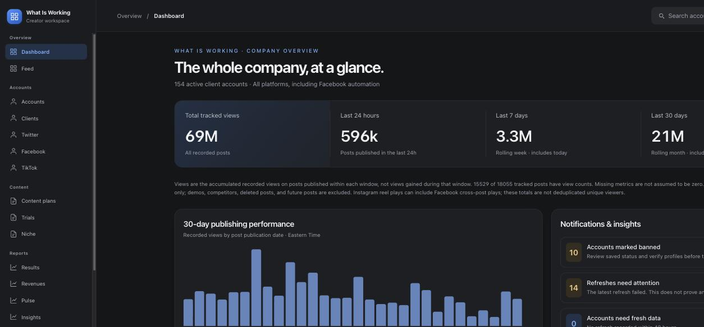
The company dashboard is 100% views: 69M tracked, 596k/24h, platform splits. But an agency is run on revenue — and the platform already has it. $101,853/30d sits on the Revenues page, and every client card shows OnlyFans earnings. None of it reaches the one page an owner opens first.
Views are the input. Money is the output. The glance page shows only the input.
Add a revenue strip to the dashboard hero (24h / 7d / 30d, top-3 earners, biggest mover) next to the view totals. The data already exists — this is a layout change, not a feature.
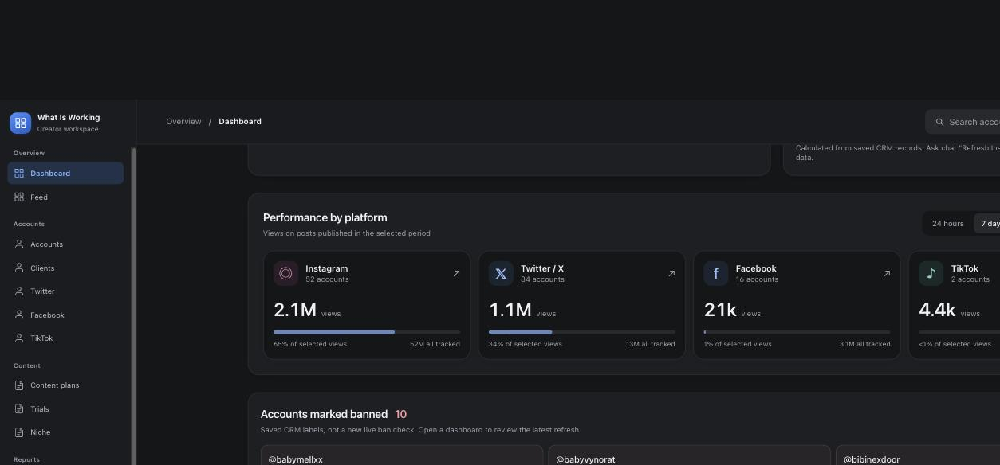
Sidebar: Twitter ✓ Facebook ✓ TikTok ✓ … Instagram ✗. Yet Instagram is 52 accounts and 65% of selected views; the whole Content Studio is built around "Instagram filming plans." The de-facto IG page is "Accounts," but nothing says so.
Worse, the three platform pages that do exist use three different layouts — Twitter is a collapsible creator list, Facebook is a switcher with a featured card, TikTok is account chips + videos. An operator learns three UIs to do one job.
One shared platform-page template (health stats → creators → accounts → top content) instantiated for Instagram, Twitter, Facebook, TikTok. Instagram gets a first-class sidebar entry.
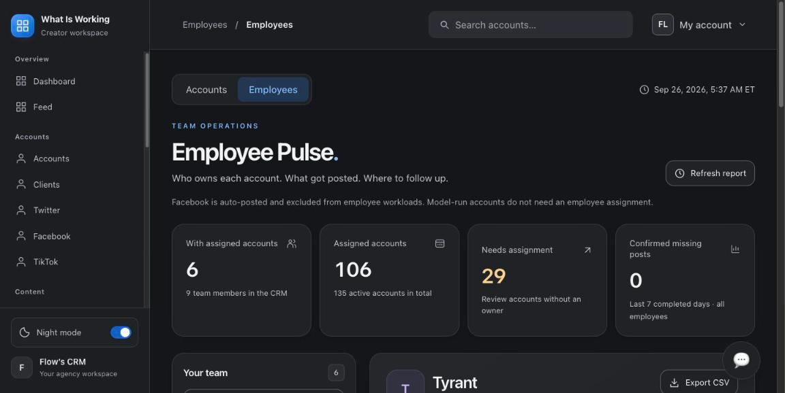
There's a full Employee Pulse section — who owns each account, what got posted, 29 accounts needing assignment, per-employee CSV export. It's exactly what an agency runs standups from. And it is not in the sidebar. The only way in is a small "Employees" tab inside Pulse (or knowing the /employees URL).
Meanwhile "29 accounts need an employee" is flagged on the dashboard daily — the workflow to resolve it is hidden two levels deep.
Promote Employees to the sidebar under a "Team" group. Make the dashboard's "needs an employee" card link straight into an assignment view with bulk assign.
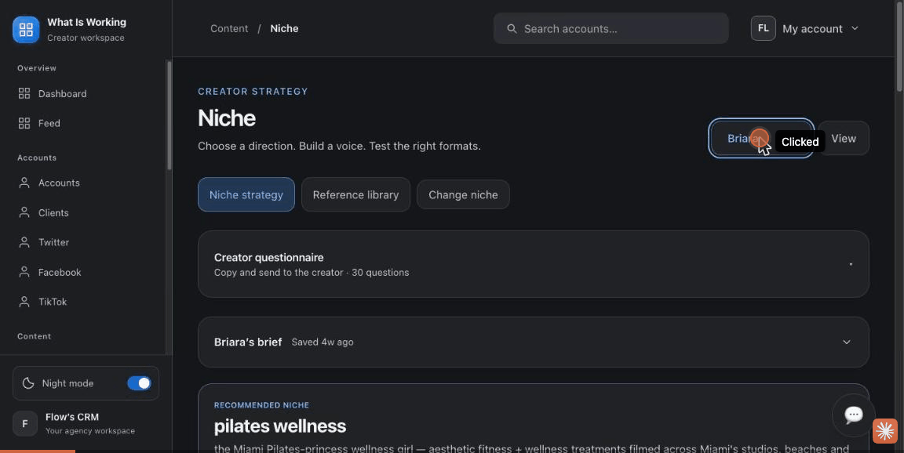
Working on one model means: Niche → dropdown + "View". Insights → another dropdown + "View". Results → dropdown + "Apply". Content plans → find her card in a grid. Each feature is client-scoped, but the app never remembers which client you're working on.
The client page's own tabs (Content plans, Niche & brief, Results) jump you to those global pages — and the breadcrumb context switches from Clients to Content/Reports, so "back to my client" is never one click.
Make the client the unit of navigation: a persistent client switcher in the top bar, and client sub-pages (/clients/briara/plans, /niche, /results) with stable tabs — the global pages become roll-ups.
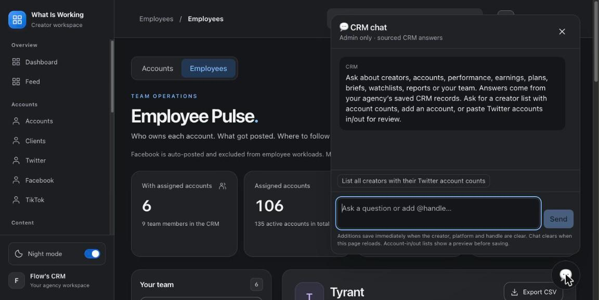
The dashboard's own help text says: "Ask chat 'Refresh Instagram analytics' to pull new data." Adding accounts, pasting Twitter lists in/out, refreshing data — all routed through an admin-only chat whose fine print reads "additions save immediately" — instant CRM writes, no confirm, no undo, invisible to new users and unavailable to employees.
Chat is a great accelerator. It can't be the primary path for operations the UI never exposes as buttons.
Every chat-only operation gets a visible UI equivalent (a real "Refresh analytics" button, bulk add-accounts form). Chat additions show a preview + confirm before saving.
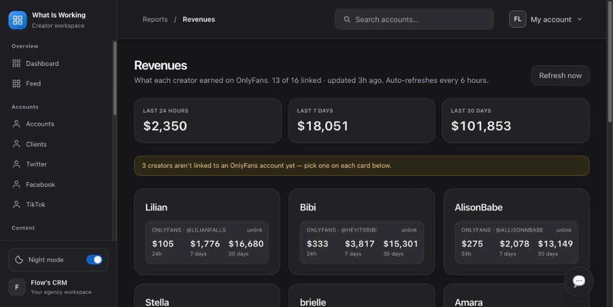
Revenues is a proper page. Expenses is an external link that dumps you into a separate app on another domain (flow-crm-private.vercel.app) with its own access. So the platform can never show the number every owner actually wants: profit per model — revenue minus chatting labor, traffic spend and tools.
Bring expenses in-app (even a simple categorized ledger: chatting / acquisition / tools), then ship a per-client P&L view: OF revenue − attributed costs = margin per model. No competitor offers this.
Individually small; together they're why the platform "doesn't flow." Ordered by frequency of pain.
Every account in the roster is a huge card — stats trio, chips, follower delta, two dropdowns, ~250px tall. Finding and triaging accounts means endless scrolling; there's no table view, no density toggle and no bulk actions (assign 10 accounts to an employee = 10 separate dropdowns).
table/compact toggle + checkbox multi-select with bulk assign, bulk refresh, bulk label.
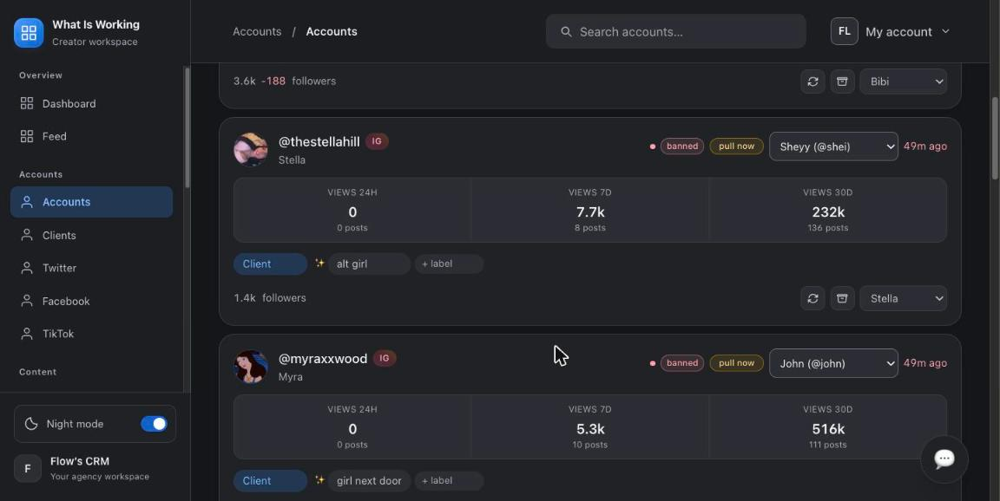
Ban triage = ten identical cards, each with a Fix Ban button that reveals the same instruction: text a rep at +1 786 491 6597. There's no state — no "outreach sent," "quote received," "recovered" — so the section looks permanently on fire and nobody knows what's already being handled.
ban-recovery pipeline with statuses per account (new → contacted → quoted → recovering → resolved) and one shared rep card.
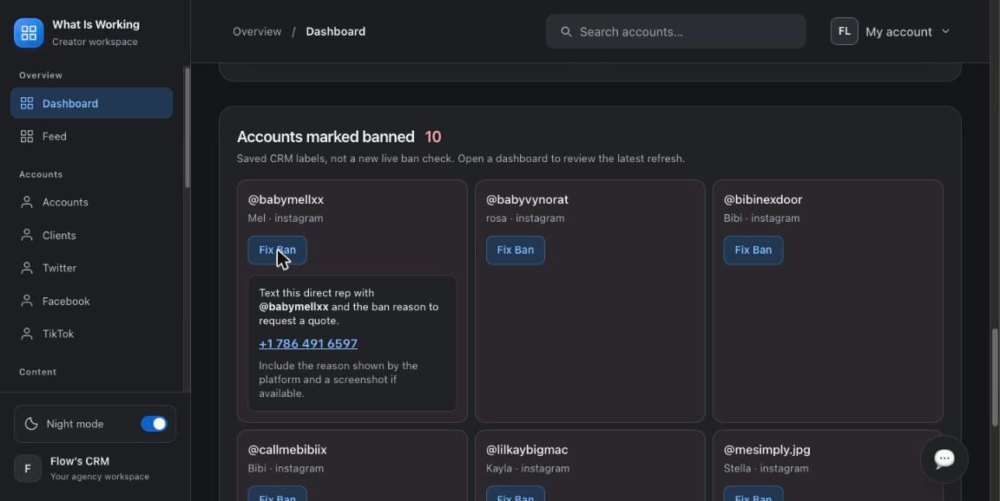
At laptop heights the dashboard scroll gets trapped — the app shell slides out of view leaving a dead black band, the position sticks mid-page, and once the page froze entirely until reload. Separately, the night-mode toggle does nothing (the app also flipped dark→light mid-session on its own).
single scroll container (shell fixed), and wire the theme toggle to a persisted preference.
Creating a client is pleasantly instant — but the new client lands at the bottom of the list with no highlight, and her page is zero-stat cards with an empty chart. The real sequence (link OnlyFans → add accounts → send questionnaire → generate niche → generate plans) exists across five sections but is never shown as a path.
onboarding checklist on every empty client page, with links into each step; jump-to + highlight after create.
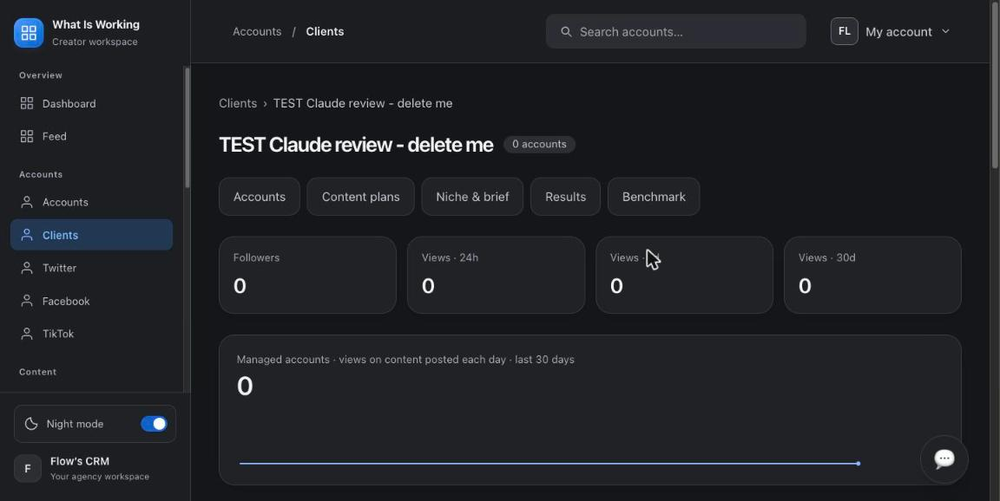
The top-bar search has lovely typeahead — but it's "Search accounts…" literally. You can't reach a client, a content plan, a report or a page from it, and the typed text lingers in the box after navigating. For a 16-client, 154-account workspace, the keyboard is the fastest nav there is.
global command palette (⌘K): clients, accounts, sections, actions ("refresh X", "open Briara's plans").
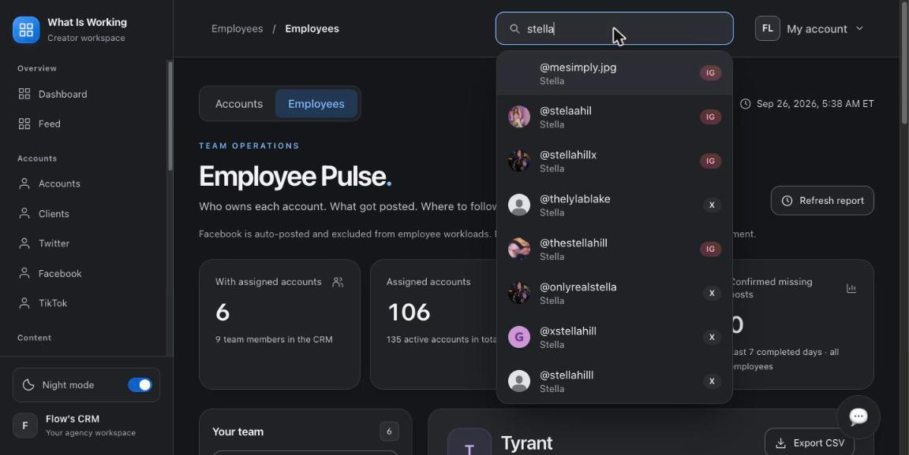
Sidebar "Feed" lives at "/" but typing /feed gives a raw, unbranded 404 with no app shell and no link back. The client card's "Benchmark →" anchor lands at the top of the page instead of the benchmark section. Dead ends cost trust fast.
styled 404 with sidebar + redirects for guessable routes (/feed → /); fix anchor scroll.
The per-client plans page repeats Download PDF · Share plan link · Open plan · Show content plan on every account card, and the dashboard repeats "Fix Ban" ten times. Long pages of cloned button rows read as noise — the eye stops seeing them.
one action bar per page acting on a selected item (or select-all), cards carry only status.
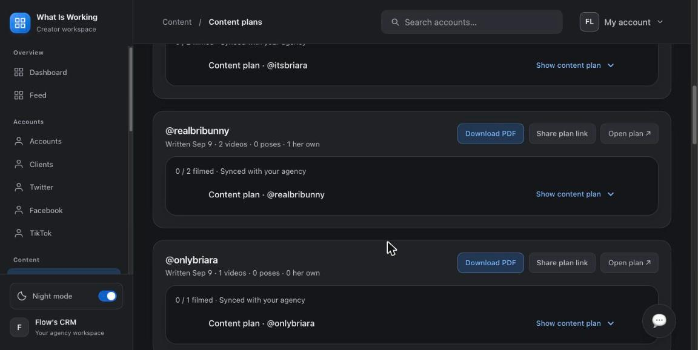
Small fixes, mostly copy and consistency — cheap to do, and they change how "finished" the product feels to staff and to any model who's shown her dashboard.
| Where | What | Change to |
|---|---|---|
| Account pages | Raw vendor errors: "HikerAPI: profile gone… v2 and v1 profile lookups both explicitly reported user not found" | "Instagram reports this profile as unavailable — usually a ban or handle change. Last checked 50m ago." |
| Accounts form | "X accounts sit at 'Waiting for API key' until the twitterapi.io key is configured" | Plain status chip + an admin-only settings note. Vendors don't belong in operator UI. |
| Competitor scan | "Each scan runs up to 3 Instagram topic scrapes via Apify (a few cents)" | "Scans Instagram for similar accounts (uses a small amount of scan credit)." |
| Dashboard | 4-line methodology disclaimer under the hero stats | One line + "How views are counted ▸" expander. |
| Breadcrumbs | "Accounts / Accounts", and section-jumping crumbs from client tabs | Consistent trail: section → entity ("Clients / Briara / Plans"). |
| Clients (empty) | Dropdown reads "Every account is already linked" on a client with 0 accounts | "No unassigned accounts — add one in the roster." |
| Notifications | "0 accounts need fresh data" card still renders | Hide zero-count cards; celebrate the empty state instead. |
| Insights | Playbook citations like [2.4][3.2c] with no explanation | Tooltip or link to the playbook rule text. |
| Account header | Stray copy "What you are looking for is", dense meta "iOS farm 1 · Phone 1 · Team report: stella4 — all green" | Labelled fields (Device, Farm, Report status) — and delete the orphan sentence. |
| Terminology | "Trials" (trial reels) will read as OnlyFans trial links to any OFM audience | "Trial reels" or "Repost engine." |
Benchmarked against the tools agencies actually buy (Infloww ~$40/creator, Supercreator $15–99/acct, OnlyMonster $30–250/mo, FansCRM $39–99). WISFMA's traffic-side intelligence beats all of them. The revenue side of the house — chatting — is where the market's money is.
| Agency need | WISFMA | Infloww | Supercreator | OnlyMonster |
|---|---|---|---|---|
| Traffic-account health (bans / shadowbans / cadence) | Best in class | Partial | — | Partial |
| AI content strategy per creator (niche, hooks, 30-day plan) | Yes — unique | — | — | — |
| White-label client reporting | Yes | — | — | Exports |
| Unified fan inbox / chatting | No | Core | Core | Core |
| Chatter shifts, performance & commission math | No | Yes | Yes | Yes |
| AI chat assist (the 2026 battleground) | No | Copilot beta | "Izzy" | Suggestions |
| Fan segmentation / LTV | No | Deep | Yes | Yes |
| Profit per model (revenue − costs) | Possible — expenses exist, off-platform | — | — | — |
| Team roles & permissions | Owner only | Yes | Basic | Yes |
| Data export / API | CSV in one spot | — | — | Open API |
| Compliance vault (2257 / releases / IDs) | No — nobody has it | — | — | — |